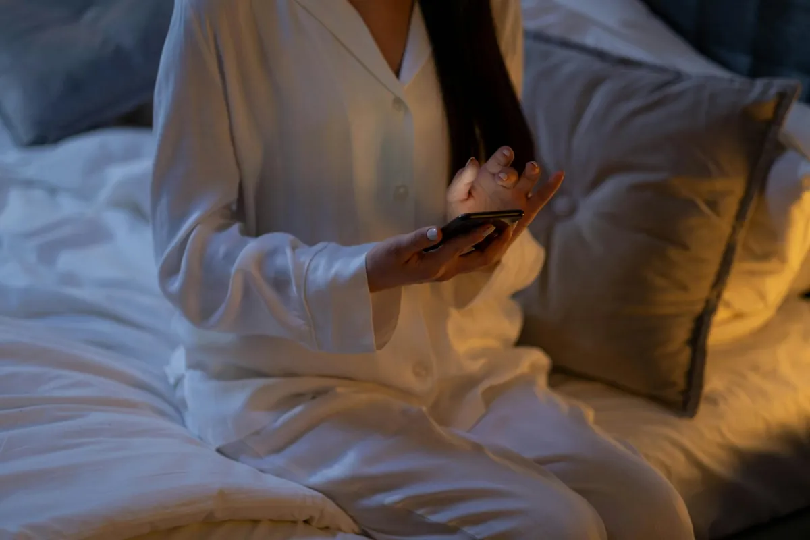
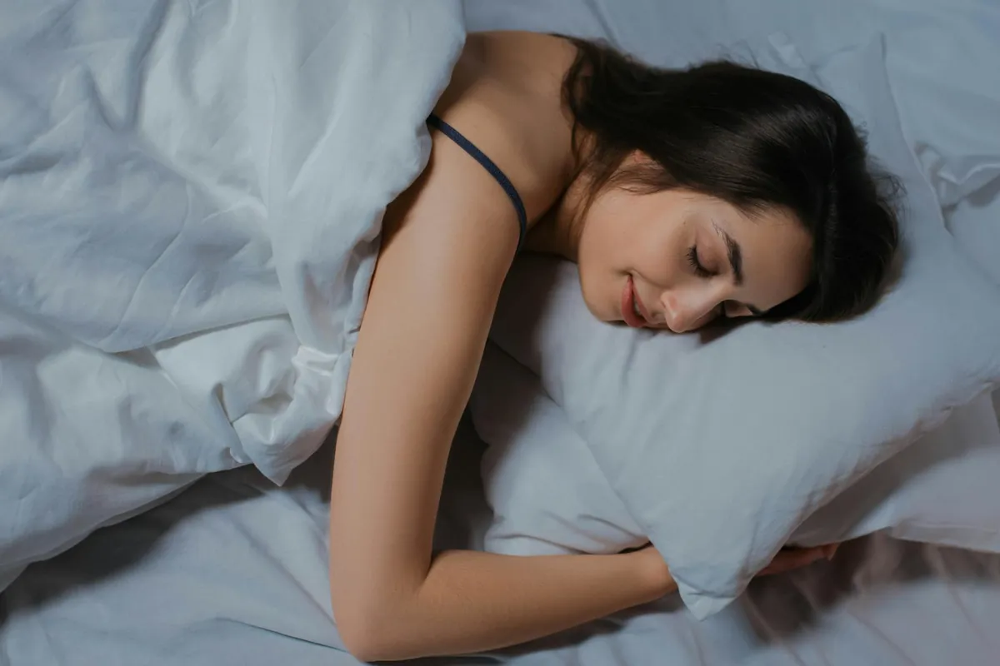
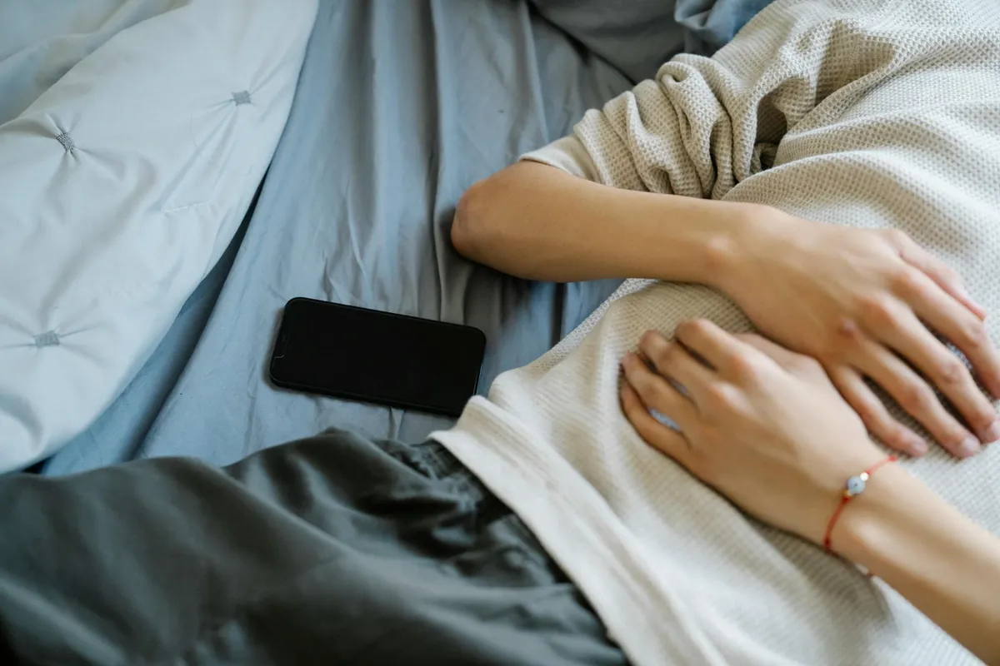

Blue Light Blocking Glasses for Better Sleep & Reduced Eye Strain: My Secret Weapon

Key takeaways
- I used to be glued to my phone and laptop until the very last minute before crashing into bed.
- Then I'd toss and turn, staring at the ceiling, wondering why I felt so wired.
- Track what feels sustainable and adjust gradually.
I used to be glued to my phone and laptop until the very last minute before crashing into bed. Then I'd toss and turn, staring at the ceiling, wondering why I felt so wired. Sound familiar? It took me way too long to realize that those glowing screens were wrecking my sleep and leaving my eyes feeling like sandpaper. That's when I discovered the simple yet powerful magic of blue light blocking glasses for better sleep & reduced eye strain.
It's not just about looking a little quirky; it's about retraining your brain. Our bodies have this ancient internal clock, our circadian rhythm, that's super sensitive to light. When the sun goes down, our brains are supposed to get the signal to start producing melatonin, the sleepy hormone. But the blue light emitted from our phones, tablets, and computers screams, "Hey! It's still daytime!" This tricks your brain, suppressing melatonin production and making it way harder to fall asleep.
Wearing blue light blocking glasses for a couple of hours before bed is like a gentle, digital-age lullaby for your brain. They filter out that disruptive blue light, allowing your natural melatonin production to kick in. I noticed a difference within a week. I wasn't just falling asleep faster; I was staying asleep longer and waking up feeling genuinely rested, not like I'd been dragged through a hedge backward.
But it's not just about sleep. My days are filled with screen time, whether I'm working, catching up on news, or connecting with friends. My eyes used to feel dry, gritty, and downright exhausted by mid-afternoon. Headaches were a regular unwelcome guest. Using blue light blocking glasses throughout the day, especially during long work sessions, has been a game-changer for my digital eye strain. It's like putting on sunglasses for your computer screen.
Think of it this way: you wouldn't drink a triple espresso right before trying to meditate, right? Similarly, exposing your eyes to intense blue light before bed is like giving your brain a jolt when it needs to wind down. Blue light blocking glasses act as a buffer, a crucial step in my nighttime routine for a related healthy tip. They help me transition from the digital world to a state of calm readiness for sleep.
Beyond just wearing the glasses, creating a wind-down routine is essential. Dimming the lights in your home an hour or two before bed, avoiding intense news cycles, and maybe picking up a physical book can all contribute to better sleep hygiene. This is another practical guide to help you embrace a healthier lifestyle. It's about signaling to your body that it's time to relax and prepare for rest.
The 2-Minute Win
Right now, while you're reading this, take a moment to dim the lights around you if possible. If you're on a device, check your screen settings for a "night mode" or "blue light filter" and enable it. This small adjustment can start signaling to your brain that it's time to wind down.
I also found that not all blue light glasses are created equal. Some have a very subtle tint, while others have a more pronounced amber or orange hue. For sleep, I prefer the ones with a stronger tint because they block more of the problematic wavelengths. For daytime use to combat eye strain, a lighter tint might be more comfortable and less distracting. Experiment to see what works best for you.
Pro-Tip: Look for glasses specifically designed to block a high percentage (70-90%) of blue light in the 400-470nm range for maximum sleep benefits. For daytime eye strain, a lower percentage might suffice.
Consistency is key here. I wear mine every single night, no excuses. It's become as automatic as brushing my teeth. This commitment helps to stay consistent with this new healthy habit. The benefits compound over time, leading to more consistently good nights of sleep and less daytime fatigue.
If you're looking for ways to improve your sleep and reduce the daily grind of digital eye strain, I can't recommend trying blue light blocking glasses enough. They've been a surprisingly effective tool in my personal wellness journey. It's a simple, affordable step that can make a significant difference in how you feel, both at night and throughout your day. You can explore more sleep guides and find other practical wellness tips to complement this.
Educational only — not medical advice.
Disclosure: This page may contain affiliate links.
Recommended Reading
- What's a Longevity Daily Routine? Aligning Your Day for a Healthier, Longer Life
- What's a Longevity Daily Routine? Align Your Day for a Healthier, Longer Life
- Unlock Your Best Self: Daily Hydration Benefits for Glowing Skin & Peak Energy
More in sleep

sleepUnlock Peak Performance: The Ultimate Guide to Optimizing Your Sleep
Struggling with energy? Unlock Peak Performance: The Ultimate Guide to Optimizing Your Sleep. Discover science-backed st
Read article →
sleepBiohacking Your Sleep: Advanced Strategies for Deeper Rest and Peak Performance
Unlock peak performance with advanced biohacking sleep strategies. Discover cutting-edge techniques from light therapy t
Read article →